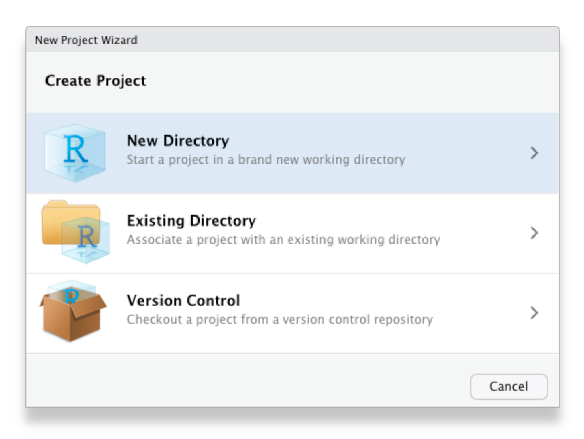
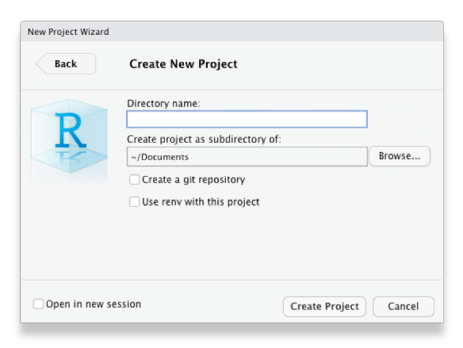

Introduction
Imagine you’ve been working on some analysis intermittently for a few weeks. Unless you’re very lucky, you’re likely to experience one or more of these common problems:
- As you work, you create various different files (for example containing the data you are using, code you have written and charts you have made) until it becomes difficult to keep track of what is in each file and how different files relate to each other.
- It becomes difficult to remember exactly what data and which code produced which chart, so that if someone has a question about how you came to a particular conclusion it is difficult to be sure. Likewise, if you discover a mistake in your code then it is hard to know what outputs it affected.
- If you need to take a break from your work (perhaps to work on something else) and come back to it later, it becomes irritating to have to close all the code and other files you are working on and then open them again later.
All of this can make data analysis much harder, especially if you’re trying to find a particular file or check if a result is correct just before a deadline.

Fortunately, we can solve these problems using a combination of the RStudio Projects feature and a plan for organising our files. Once you’ve formed the habit of working in this way, it becomes second nature and you’ll find your work is both easier and produces more-reliable results.
Stats Illustrations by Allison Horst licensed under the Creative Commons Attribution licence.
RStudio Projects
Projects in RStudio are a way of keeping your analysis organised. When you work inside an project, RStudio will do various things in the background that make it easier to stay organised. For example, RStudio will save the project’s state: if you have to close the project and re-open it later, all the files that you had open before will re-open, too.
I strongly recommend that you use projects for everything you do in RStudio. There are no real costs to using projects and the benefits can be substantial, so try to get used to using them for all your analysis. Have one RStudio project for each project that you work on, for example you might have one project for each research report that you write or piece of analysis you do on a particular topic.
To create a new project from within RStudio, click File
then New Project … and choose to create the project in a
new directory on your computer:

Choose to create a new (empty) project, rather than use any of the templates for specific types of projects:

Choose what the new project
directory should be called, and where on your computer it should
be created (you might want to create a ‘Crime Mapping’ directory to hold
all the projects you will create during this course), then click
Create Project:

That’s it – you have created an RStudio project that you can organise your work in.
Organising a project
Now you’ve created an empty project, you can create some directories within it to organise your files. There are lots of suggestions online for how to organise your files within a project – see this summary of project-organisation methods if you would like to understand the different options available – but the most important thing is that you have separate places to store:
- the original/raw data that you have obtained (e.g. by downloading it from a website or extracting it from a police database),
- the results of any data wrangling that you do,
- files containing the code that you use to wrangle the data and conduct your analysis, and finally,
- the outputs from your analysis, including tables, charts and reports.
Putting each of these four types of files in a separate directory
within the project directory makes it much easier to keep track of them.
We can create the necessary directories directly in R using the
dir.create() function.
# `dir.create()` does not produce any output unless there is a problem
dir.create("source_data")
dir.create("analysis_data")
dir.create("code")
dir.create("outputs")Because we are running these commands from inside an RStudio project, these directories will automatically be created as subdirectories of the project directory we have already created – this saves a lot of moving between directories, and is another reason to use RStudio projects.
Once you are working within an RStudio project, RStudio knows to
treat any reference to a file or folder as being relative to the folder
that contains the RStudio project. So, for example, if your project for
analysis of thefts in Vancouver is stored in a folder called
/Documents/crime_mapping/vancouver_thefts/ and you run the
R code read_csv("source_data/vancouver_thefts.csv"),
RStudio knows that you mean to open the file stored at
/Documents/crime_mapping/vancouver_thefts/source_data/vancouver_thefts.csv.
This can save you lots of time working out how to reference a particular
file location in R.
What about setting a working directory?
If you have learned some R before this course – especially if it was
some time ago or taught by someone who themselves learned R a long time
ago – you might have learned to start each analysis by setting a
working directory using the setwd() function or
the Session > Set Working Directory menu option in
RStudio. Not only do you not need to do this when you keep your analysis
in an RStudio project, you should not set a working directory in
R because it can have several unpleasant side effects.
The biggest problem with manually setting a working directory in your
R code is that if you share your code with someone else then it is
likely the setwd() function will produce an error because
that person’s computer will have a different directory structure to your
computer. So if the first line of your R script is
setwd("/Users/uctzaaa/Documents/crime_mapping_vancouver_thefts/")
because that is the location of the working directory on your computer,
this will produce an error on another computer that does not have a
/Users/uctzaaa directory (i.e. it will cause an error on
almost every computer in the world). This makes it much harder to get
help on your code, for example if you are using a reproducible example
(reprex) to show someone else a problem with your code.
Setting a working directory using the
Session > Set Working Directory menu buttons in RStudio
has the additional problem that it’s not possible to work out from
reading your R code that you have set the working directory that way. So
if someone else (or you, in a few weeks when you’ve forgotten) tried to
run your code and it produced an error, there would be nothing in the
code to tell them that they needed to change the working directory.
For more detail on why you should not set a working directory manually, read this blog post on project-oriented workflow.

Typing out the dir.create() function four times is
somewhat tedious, and certainly would be if we needed to create (say) 10
directories rather than four. One way to make this code shorter is to
use the walk() function from the purrr package,
which is part of the tidyverse suite of packages. walk()
allows us to run any function several times, each time using a different
input, one at a time. The function is called walk() because
it ‘walks’ through all the items in a vector of inputs, applying the
same function to each of them in turn.
The general format of calls to the walk() function
is:
walk(vector_of_inputs, function_name_to_apply_to_those_inputs)So if we wanted to create the same four directories using
walk(), we could:
purrr::walk(c("source_data", "analysis_data", "code", "outputs"), dir.create)Note that the function name dir.create is not followed
by a pair of parentheses when it is used inside walk().
walk() is a very powerful function and this is only a
very simple example of what it can do, but we will return to it when we
need it again.
Why didn’t we use a loop instead of walk()?
If you have learned any other programming languages, you might
remember that the usual way to apply the same function to a series of
values is to use a ‘loop’, which (depending on the language) might be
called a ‘for loop’ or a ‘foreach loop’. While you can create ‘for’
loops in R that would do the same thing as the walk()
function, it is generally better not to use ‘for’ loops in R. This is
both because loops are often
slower – which can be particularly important when analysing large
spatial datasets – and because functions like walk() can
easily be used inside pipelines constructed with the |>
operator.
If you’re ever tempted to use a ‘for’ loop in R, stop and
think about how to achieve the same result using a function like
walk().
Naming files
The final step in organising your work so that you can analyse data and stay sane is to give every file you create a name that will help you find it later on. To do this, stick to three principles:
- make your file names easily readable by computers,
- make your file names easily readable by humans, and
- use file names that will by-default by sorted in a meaningful way.
Computers can increasingly read file names that contain any
characters you can think of, but many different characters make
referencing your file names in your code more difficult than need be. To
keep your code simple, stick to files names that contain only
lower-case letters (so you don’t have to remember if each
letter is upper-case or lower-case), numbers, hyphens (-)
and underscores (_) – that’s it. If your language uses
letters with accents, its best to not use those accents in file names.
So, instead of having files with names like this:
John's raw data.csv
figure 4.jpg
DüsseldorfCrimeData.xlsxuse the names:
john_raw_data.csv
figure_4.jpg
dusseldorf_crime_data.xlsx
To make your files easily readable by humans, make sure the file name
describes what the file contains or does. So giving a file the name
crime_data_atlanta_2020.csv is much more useful than
calling the same file data_file_23.csv. If you’ve been
using computers for a while (or you’ve been taught by someone who has),
you may have been trained to use very short file names because old
computers could only handle very short names. Fortunately, modern
computers can handle much longer file names, so it’s generally safe to
use a few extra characters to describe what your file is or does. File
names are also easier to read if words are separated by a hyphen or
underscore: police_recorded_robbery_data_2020 is much
easier to read than policerecordedrobberydata2020.
If your files have a meaningful order, it’s useful to reflect this in the file name. Imagine you have three code files: one for data wrangling, one for carrying out spatial analysis tasks on that wrangled data and a third one for creating charts to show the results of the analysis. You cannot run the analysis code until the data wrangling is complete, so the files have a meaningful order.
When you look at these files in the Windows File Explorer, Mac Finder or RStudio Files tab, they are likely to appear out of order. For example, they might be:
analyse_data.R
create_charts.R
wrangle_data.RIf you add a number to the start of the file name to show which order to use the files in, things become clearer:
01_wrangle_data.R
02_analyse_data.R
03_create_charts.RNote that the numbers are padded with a zero so that they will still be sorted in the correct order if you end up with more than 10 files in my workflow (I’ve only used one zero for padding because I don’t expect to have more than 100 files).
‘File Organization: Naming’ by Data Carpentry licensed under the Creative Commons Attribution licence. XKCD.com comic ‘Documents’ licensed under the Creative Commons Attribution-NonCommercial license.
In summary
In this tutorial we’ve learned how to stay organised while mapping crime. Following the rules outlined here might seem troublesome or unnecessary now, but they’ll make things much easier when you’re up against a deadline. The best thing to do is get into good habits when you start coding, so you can make use of them as you develop your coding skills further.
Check your understanding
If you’d like more information about these topics, you might be interested in:
- Chapter 8: Workflow projects in R for Data Science introduces RStudio projects and gives more detail about the benefits of using them.
- Naming Things by Jenny Bryan talks through good practice for naming files in more detail.
- Projects in RStudio is a 40-minute webinar given by Garrett Grolemund that explains how to make the best of RStudio Projects.